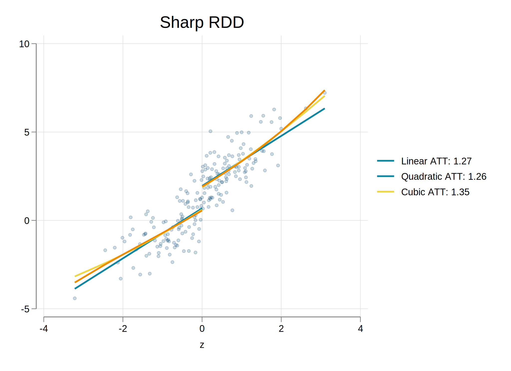
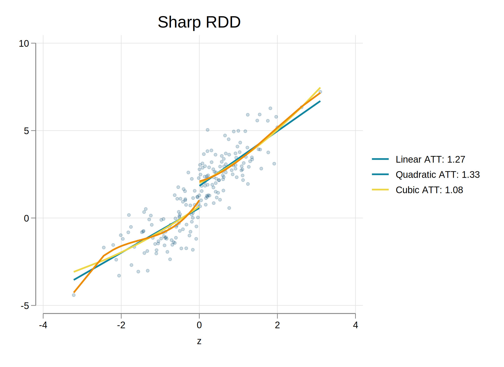
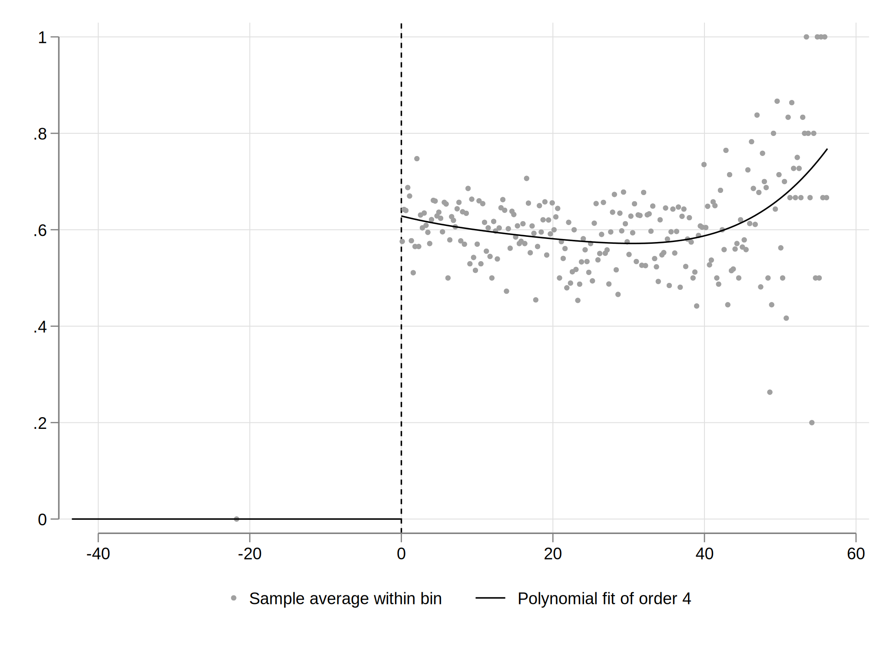
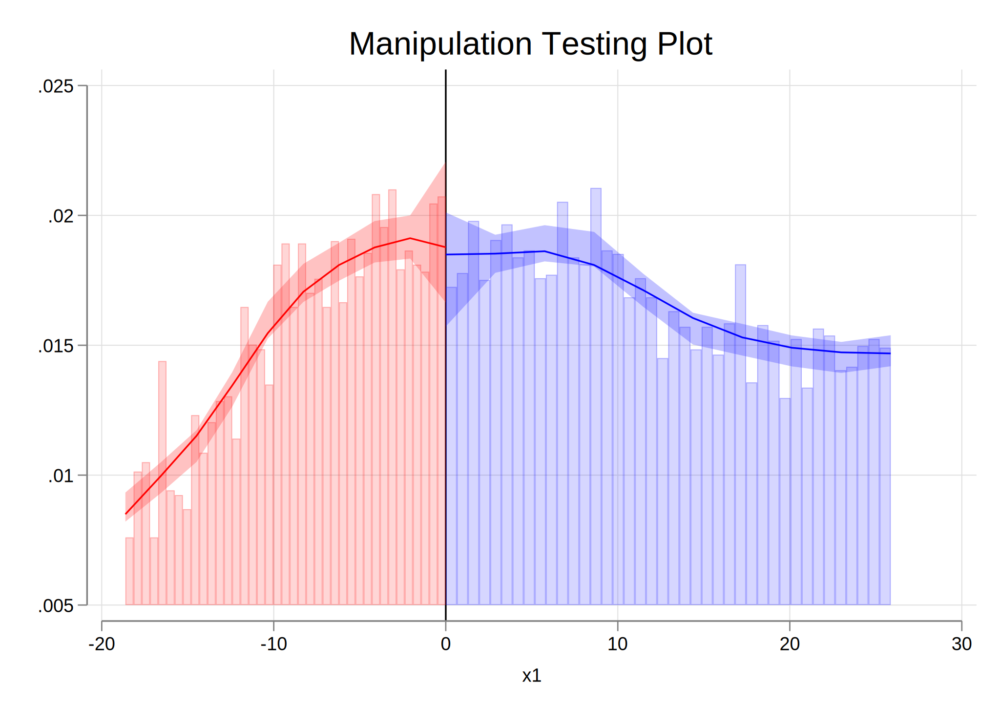
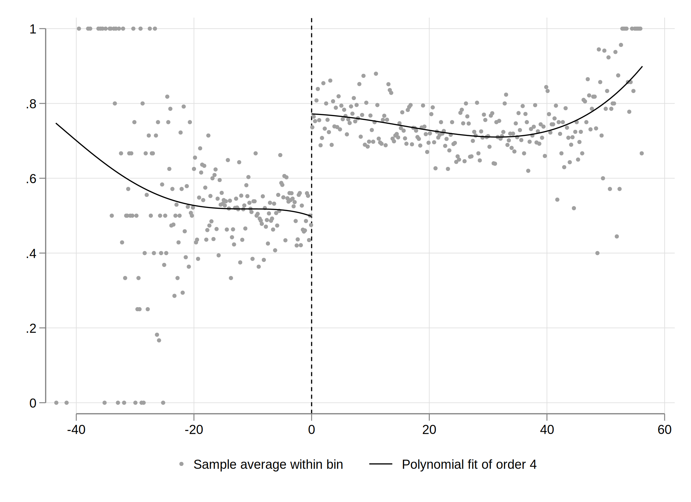
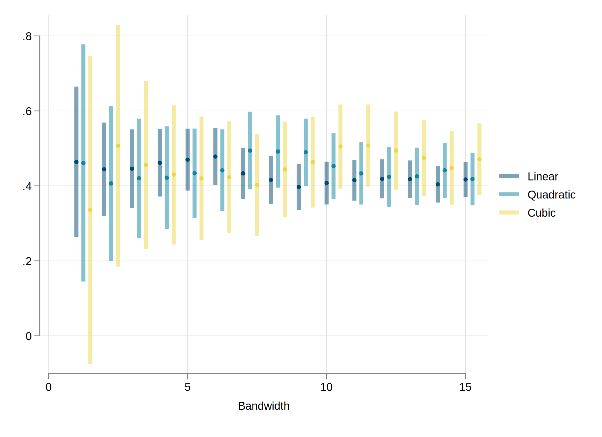

clear
set scheme white2
color_style bay
set seed 1
qui:set obs 100
gen e=rnormal()
gen z=runiform()+e
gen t = z>0
gen y = 1 + z + e + rnormal() + (z>0)
two line t z, sort title("Treatment") ylabel(0 "Not Treated" 1 "Treated") name(m1, replace) ytitle("")
graph export resources\rdd1.png, width(1000) height(1000) replace
two scatter y z, sort title("Outcome") pstyle(p1) || lfit y z, lw(1) pstyle(p2) ///
|| lfit y z if z<0, lw(0.5) || lfit y z if z>0, lw(0.5) , legend(off) name(m2, replace)
graph export resources\rdd2.png, width(1000) height(1000) replaceRegression Discontinuity Design
Up close, we are all the same
Re-Cap: Potential outcome Model
In the ideal world, where we can see all possible outcomes and scenarios of your potential treatments, it will be very simple to estimate treatment effects:
\[ \delta_i = Y_i(1)-Y_i(0) \]
This works because all observed and unobserved individual characteristics are kept fixed, except for the treatment Status.
\[y_i(D)=y_i(X,u,D)\]
So when comparing a person with himself (clones or parallel worlds), we know (or at least expect) that everything else is the same, and that differences between the two states are explained only by the treatment.
The Problem
We do not observe both ALL States at the same time. People will either be treated or untreated, not both.
So what can we do?
We need to find good counterfactuals!
This means finding people are very similar to the ones treated, so they can be used as the examples of the “what if” question.
But there is a problem. Even in the best scenarios, we can never be asure about how to control for unobservables…or can we?
You can always RCT But it can be expensive
You can IV the problem but its hard to justify
You can add FE, but you have time varying errors
Then what?
- You could RDD the problem (if you have the right data!)
What is RDD?
RDD or Regression Discontinuity design is methodology that is known for its clean identification and with a relatively easy visualization tool to understand the identification, and solve the problem of unobserved distributions. (see here for a recent paper on how to make graphs on this).
In fact, the treatment Status has a very clear Rule!
Consider the following problem:
- You want to study the role of college on earnings.
- You have data on people who are applying to go to school. They all take some standardized tests. Their grade will determine if they get into College or not.
- People with high skills will get a higher grades in the GRE, go to college, and probably get higher salaries.
- But, there is a problem. How can you figure out if wages are due to College or skill?
Possible Solution
Say that we actually have access to the grades, which range from 100 to 200. And assume that you say, every one with grades higher than 170 will go to college.
Can you estimate the effect now?
- You can’t compare people with more than 170 to those with less than 170. Because skill or ability will be different across groups.
- However, what if you compare individuals with 170-172 vs 167-169?
- These individuals are so close togeter they problably have very similar characteristics as well!
- you have a Localized randomization.
In this case, your analysis is those individuals just above the thresholds to those just below (counterfactual)
Unless you think grades near the threshold are as good as random, then you have a design to identify treatment effects!
RDD: How it works.
Selection and Index:
- The first thing you need to see if you can use and RDD is to see if you have access to a variable that “ranks” units.
- This variable should be smooth and preferibly continuous.
- age, distance from boarder, test score, poverty index
- Assignment into treatment is a function of this index only, with a clear threshold for the index to have an impact the treatment.
- Those under the Threshold are not treated. Those above are.
- This is called a Sharp RDD design.
- The threshold should be unique to the Treatment of interest (nothing else happens around that point)
- In the College Case, we assume 170 triggers acceptance to School. But if it also triggers Scholarships??
Perhaps the Most important: The score cannot be manipulated
- Only then we have true local randomization.
You want the potential outcomes to be smooth functions of Z. (so we do not mix treatment effects with Nonsmooth changes in outcomes)
How it works : p2
Recall that in an RCT (or under randomization) treatment effects are estimated by comparing those treated and those not treated.
\[E(y|D=1)-E(y|D=0)\]
Under SRDD, you can also think about the same experiment, except that we would need to compare individuals AT the theshold.
\[\begin{aligned} \lim_{z\downarrow c} E(y|Z=z) &- \lim_{z\uparrow c} E(y|Z=z) \\ E(y(1)|Z=c) &-E(y(0)|Z=c) \end{aligned} \]
- In this case, the overlapping assumption is violated. So we need to attemp obtaining effects for groups AT the limit when \(Z=c\).
Estimation
The most simple way to proceed is to estimate the model using a parametric approach (OLS)
\[y = a_0 + \delta D_{z>c} + f(z-c) + e\]
The idea here is to identify a “jump” in the outcome (treatment effect) at the point where \(z\) crosses the threshold.
But to identify the jump only, we also need to model the trend observe before and after that threshold (\(f(z-c)\)), which can be modelled as flexible as possible. (this include interactions with the jump)
Alternatively, we could use smaller bandwidths (nonparametric)
Example
qui: {
clear
set seed 1
set obs 200
gen e=rnormal()
gen z=runiform()+e
sum z
replace z=(z-r(mean))/r(sd)
gen t = z>0
gen y = 1 + 0.5*z + e + rnormal() + (z>0)
qui:reg y t z
predict yh1
local b1:display %3.2f _b[t]
qui:reg y t c.z##c.z
predict yh2
local b2:display %3.2f _b[t]
qui:reg y t c.z##c.z##c.z
predict yh3
local b3:display %3.2f _b[t]
sort z
}
two (scatter y z, sort title("Sharp RDD") pstyle(p1) color(%20)) ///
(line yh1 z if z<0, pstyle(p2) lw(0.5)) (line yh1 z if z>0, pstyle(p2) lw(0.5)) ///
(line yh2 z if z<0, pstyle(p3) lw(0.5)) (line yh2 z if z>0, pstyle(p3) lw(0.5)) ///
(line yh3 z if z<0, pstyle(p4) lw(0.5)) (line yh3 z if z>0, pstyle(p4) lw(0.5)) , ///
legend(order(2 "Linear ATT: `b1'" 3 "Quadratic ATT: `b2'" 4 "Cubic ATT: `b3'")) name(m1, replace)
Example
qui: {
qui:reg y t c.z#t
predict yh11
local b1:display %3.2f _b[t]
qui:reg y t (c.z##c.z)#t
predict yh21
local b2:display %3.2f _b[t]
qui:reg y t (c.z##c.z##c.z)#t
predict yh31
local b3:display %3.2f _b[t]
}
two (scatter y z, sort title("Sharp RDD") pstyle(p1) color(%20)) ///
(line yh11 z if z<0, pstyle(p2) lw(0.5)) (line yh11 z if z>0, pstyle(p2) lw(0.5)) ///
(line yh21 z if z<0, pstyle(p3) lw(0.5)) (line yh21 z if z>0, pstyle(p3) lw(0.5)) ///
(line yh31 z if z<0, pstyle(p4) lw(0.5)) (line yh31 z if z>0, pstyle(p4) lw(0.5)) , ///
legend(order(2 "Linear ATT: `b1'" 3 "Quadratic ATT: `b2'" 4 "Cubic ATT: `b3'")) name(m2, replace) 
Fuzzy RD: Imperfect compliance
While the Idea Scenario happens when there is perfect compliance (above the threshold you are treated), this doesnt happen all the time.
In the education example:
- Some people with low grades may be “legacy” or have “contacts” (or took a second exam later) and manage to go to college
- Some decided not to go, even after entering to college
Sounds Familiar? (Never takers vs always takers)
When this happens, you can still do RDD, but you need more steps
Fuzzy RD
- Estimate the impact of Discontinuity on Treatment
- Estimate the impact of Discontinuity on Outcome
- Estimate the ratio between (1) and (2)
Sounds Familiar?
- Its a kind of wald/IV estimator.
- The instrument is the discontinuity
- The the endogenous variable is the treament
You still need to estimate the effect as close to the Discontinuity as possible
ivregress may still do most of this for you
Example

Effect:
qui: gen dz = z>0
qui: reg y dz c.z##c.z#i.dz
local b1 = _b[dz]
qui: reg t dz c.z##c.z#i.dz
local b2 = _b[dz]
display "There is a " %3.2f `b1' " effect on the outcome"
display "and a " %3.2f `b2' " effect on the treatment"
display "which imply a LATE of " %3.2f `=`b1'/`b2''There is a 0.45 effect on the outcome and a 0.44 effect on the treatment which imply a LATE of 1.03
Things to consider
Theoretical:
- You need to identify “jumps” caused by a running variable. (depends on knowing how things works)
- The potential outcomes have to be smooth functions of the running variable
Empirical:
- The running variable shouldnt be manipulated. (random)
- Implies Assignment rules are not known, are exogenous, and there is no random heaping
- Controls should be balanced around the threshold
Testing Empirical Assumptions
Manipulation of running variable may cause a non-smooth density in the running variable:
- If there is no manipulation, you may expect density round threshold to be smooth.
- In Stata: ssc install
rddensity. In r install.packages(c(‘rdd’,‘rddensity’))
- In Stata: ssc install
Code
set linesize 100
qui:ssc install lpdensity, replace
qui:ssc install rddensity, replace
rddensity z, c(0) plot
graph export resources\frdd3.png, width(1000) replace
In cases of nonrandom heaping, it may be possible to avoid the problem by restricting the data.
This is an example of measurement error, when individuals may “round-up/down” answers. And may occure near threshold.
This does not necessarily mean there is manipulation.
Possible Solution? Estimate RDD excluding observations around (excluding) threshold.
Covariate balance and Placebo tests
If treatment is locally randomized, then covariates should not be affected by discontinuity.
Alternatively, one could estimate effects on variables you know CANNOT be affected by the treatment
One could also implement a placebo test, checking the impact on a different threholds.
- No effect should be observed on the outcome, (but some on the treatment)
Example
Impact of Scores on Scholarship recipiency
use resources\fuzzy, clear
color_style bay
qui:rdplot d x1, graph_options(legend( pos(6)))
Manipulation test
qui:rddensity x1, plot
Intention to treat
Impact on Enrollment
qui:rdplot y x1, graph_options(legend( pos(6)))
Estimation of the effect:
gen dx1 = x1>0
ivregress 2sls y (d = dx1) c.x1##c.x1#dx1
Instrumental variables 2SLS regression Number of obs = 23,132
Wald chi2(5) = 1645.56
Prob > chi2 = 0.0000
R-squared = 0.2845
Root MSE = .39876
-------------------------------------------------------------------------------
y | Coefficient Std. err. z P>|z| [95% conf. interval]
--------------+----------------------------------------------------------------
d | .4432824 .0215111 20.61 0.000 .4011214 .4854434
|
dx1#c.x1 |
0 | .0002949 .0019179 0.15 0.878 -.0034642 .0040539
1 | -.0034238 .000779 -4.39 0.000 -.0049507 -.0018969
|
dx1#c.x1#c.x1 |
0 | .0000741 .0000703 1.05 0.292 -.0000637 .0002119
1 | .0000616 .0000164 3.76 0.000 .0000295 .0000936
|
_cons | .5103635 .010876 46.93 0.000 .4890469 .5316801
-------------------------------------------------------------------------------
Endogenous: d
Exogenous: 0b.dx1#c.x1 1.dx1#c.x1 0b.dx1#c.x1#c.x1 1.dx1#c.x1#c.x1 dx1Some Sensitivity
qui:{
matrix b1 = 0,0
forvalues i = 1/15 {
ivregress 2sls y (d = dx1) c.x1#dx1 if abs(x1)<`i'
matrix b1=b1\[_b[d],_se[d]]
}
matrix b2 = 0,0
forvalues i = 1/15 {
ivregress 2sls y (d = dx1) c.x1##c.x1#dx1 if abs(x1)<`i'
matrix b2=b2\[_b[d],_se[d]]
}
matrix b3 = 0,0
forvalues i = 1/15 {
ivregress 2sls y (d = dx1) c.x1##c.x1##c.x1#dx1 if abs(x1)<`i'
matrix b3=b3\[_b[d],_se[d]]
}
lbsvmat b1
lbsvmat b2
lbsvmat b3
forvalues i = 1/3 {
gen ll`i'=b`i'1-b`i'2*1.96
gen ul`i'=b`i'1+b`i'2*1.96
}
gen z = _n-1 if b11!=.
replace z=. in 1
}
gen z1 = z + 0.25
gen z2 = z + 0.5
two (rspike ll1 ul1 z, lw(1) pstyle(p1) color(%50) ) (scatter b11 z, pstyle(p1) ) ///
(rspike ll2 ul2 z1, lw(1) pstyle(p2) color(%50) ) (scatter b21 z1, pstyle(p2) ) ///
(rspike ll3 ul3 z2, lw(1) pstyle(p3) color(%50) ) (scatter b31 z2, pstyle(p3) ), ///
legend(order(1 "Linear" 3 "Quadratic" 5 "Cubic")) xtitle("Bandwidth")(23,117 missing values generated)
(23,117 missing values generated)
Flasification test
qui {
ivregress 2sls icfes_female (d = dx1) c.x1#dx1 if abs(x1)<20
est sto m1
ivregress 2sls icfes_age (d = dx1) c.x1#dx1 if abs(x1)<20
est sto m2
ivregress 2sls icfes_urm (d = dx1) c.x1#dx1 if abs(x1)<20
est sto m3
ivregress 2sls icfes_famsize (d = dx1) c.x1#dx1 if abs(x1)<20
est sto m4
}
esttab m1 m2 m3 m4, keep(d)
----------------------------------------------------------------------------
(1) (2) (3) (4)
icfes_female icfes_age icfes_urm icfes_fams~e
----------------------------------------------------------------------------
d 0.0199 0.128 0.00791 0.0439
(0.80) (1.05) (0.65) (0.63)
----------------------------------------------------------------------------
N 14841 14799 14841 14801
----------------------------------------------------------------------------
t statistics in parentheses
* p<0.05, ** p<0.01, *** p<0.001